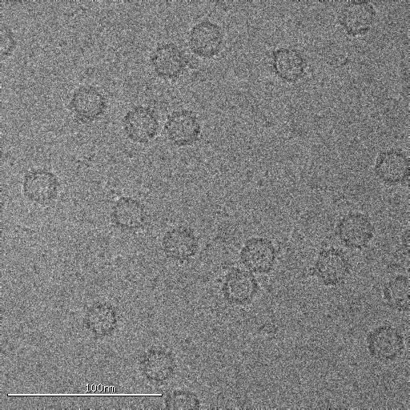

This is an article about cryo-EM

One goal of the research in the Stagg lab is to characterize the structure and function of proteins involved in vesicle trafficking. The image above shows a COPII coat. The structure was determined using cryo-EM.
What is cryo-EM?

Cryo-EM is a technique where we use an electron microscope to capture images of biomolecules. We then use computational techniques to generate 3D reconstructions of the biomolecules. If we do this with high accuracy and precision, we can achieve atomic resolution.